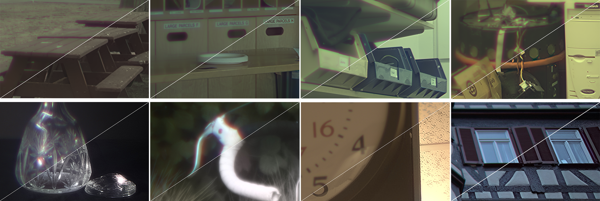

Revisiting Cross-channel Information Transfer
for Chromatic Aberration Correction
Tiancheng Sun,
Yifan (Evan) Peng,
Wolfgang Heidrich
A project collaborated with The University of British Columbia (UBC) and Tsinghua University, accepted to ICCV 2017

The blurry captured results and the reconstructed results, with the top row on synthetic data while the bottom row on real-world data.
Abstract
Image aberrations can cause severe degradation in image quality for consumer-level cameras, especially under the current tendency to reduce the complexity of
lens designs in order to shrink the overall size of modules. From an image quality point of view, chromatic aberration is usually an important degradation,
but also a challenging fix, since it requires a careful correction in the post-capture.
In this work, we revisit the pixel-wise similarity between different color channels of the image and accordingly propose a novel
algorithm for correcting chromatic aberration based on this cross-channel correlation. In contrast to recent weak prior-based
models, ours uses strong pixel-wise fitting and transfer, which lead to significant quality improvements for large chromatic aberrations.
Experimental results on both synthetic and real world images captured by different optical systems demonstrate that the chromatic
aberration can be significantly reduced using our approach.
Paper and supplementary
Paper
Paper: [ChromAberFixICCV17_lowres.pdf (~2.3MB)]
Supplementary
Supplementary document: [ChromAberFix_ICCV17_Suppl.pdf (~7.4MB)]
Interactive full size results
[SupplementaryResults.html (full-res images)]
All images are © CVF 2017, reproduced here by permission of CVF for your personal use. Not for redistribution.